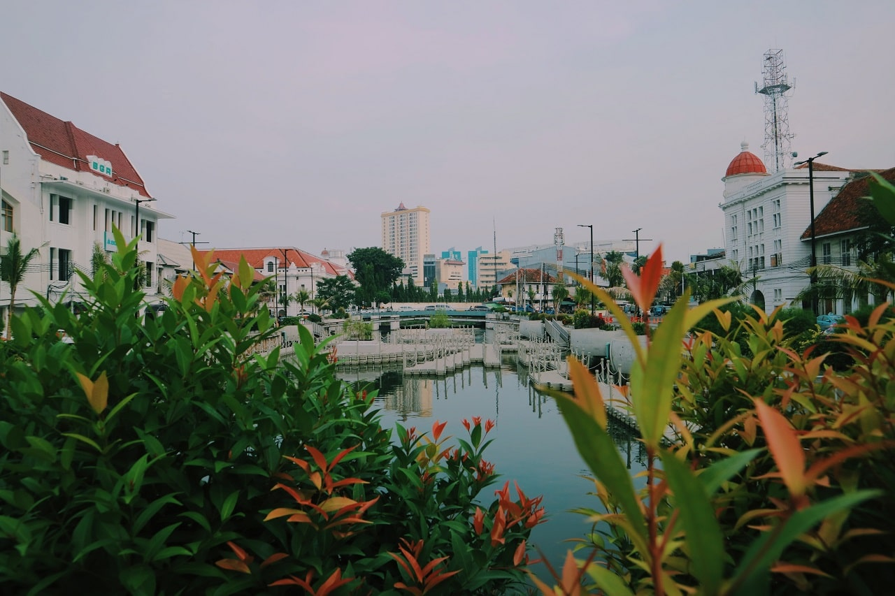
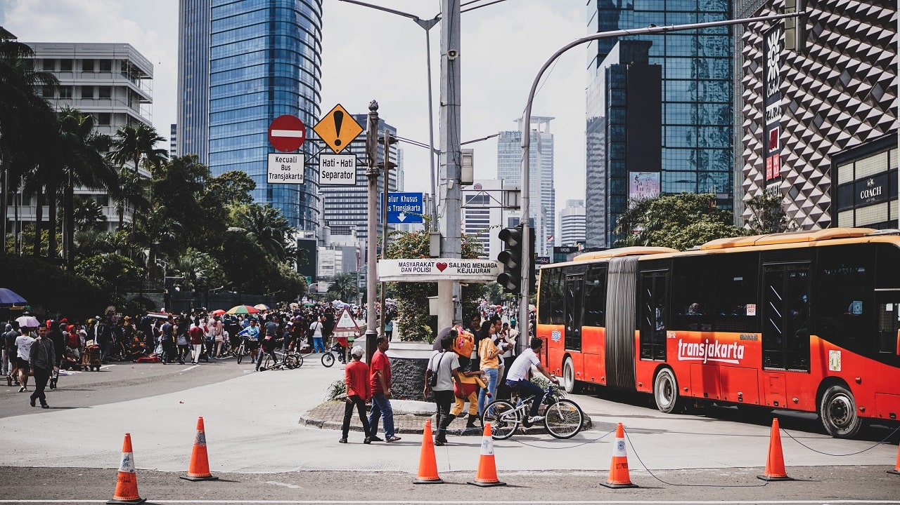
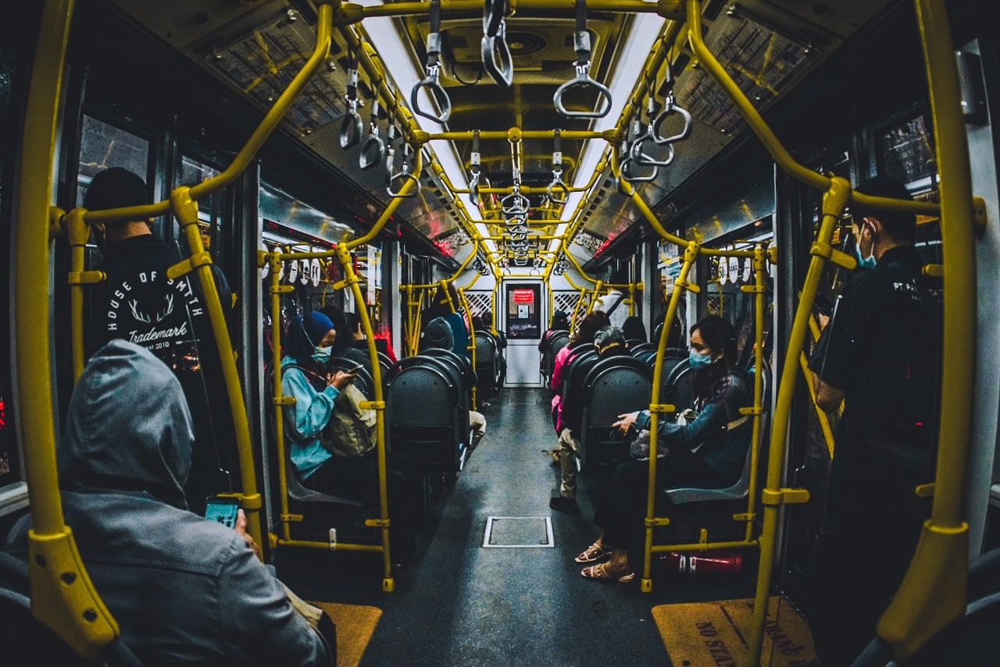
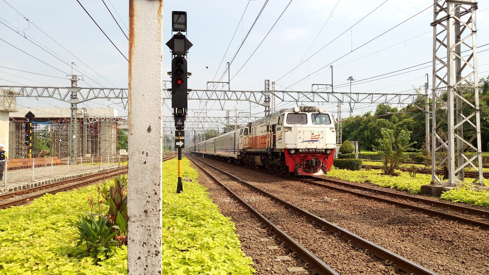

Sejarah

Kota pelabuhan ini pada mulanya bernama Sunda Kelapa, namun pada 22 Juni 1527 Pangeran Fatahillah menghancurkan Sunda Kelapa dan sebagai gantinya mendirikan kota Jayakarta di area tersebut. Tanggal inilah yang kemudian ditetapkan sebagai tanggal berdirinya kota Jakarta.
Kota Jayakarta berkembang sebagai kota pelabuhan yang sibuk, dimana para pedagang dari Cina, India, Arab dan Eropa serta dari Negara-negara lainnya saling bertukar barang-barang/komodit. Tahun 1619,Pemerintahan Belanda (VOC) di bawah kepemimpinan Jan Pieterszoon Coen menghancurkan Jayakarta dan dengan serta merta membangun kota baru yang terletak di bagian barat sungai Ciliwung, yang dia namakan Batavia,nama yang diambil dari Batavieren, nenek moyang bangsa Belanda
Batavia direncanakan dan dibangun nyaris mirip dengan kota-kota di Belanda, yaitu dibangun dalam bentuk blok, masing-masing dipisahkan oleh kanal dan dilindungi oleh dinding sebagai benteng, dan parit. Batavia ini selesai dibangun pada 1650. Batavia tua adalah tempat tinggal bangsa Eropa, sementara bangsa Cina, Jawa dan penduduk asli lainnnya disingkirkan ke tempat lainnya.
Di masa-masa kejayaannya Batavia yang terkenal sebagai ‘Permata dari timur’, diduduki oleh VOC dan kemudain akhirnya diduduki pemerintah Belanda yang terbentang luas di kepulauan Hindia timur.
Kemudian pada masa penjajahan Jepang di tahun 1942, nama Batavia diganti menjadi Jakarta.
Geografis

Jakarta berlokasi di sebelah utara Pulau Jawa, di muara Ciliwung, Teluk Jakarta. Jakarta terletak didataran rendah pada ketinggian rata-rata 8 meter dpl. Hal ini mengakibatkan Jakarta sering dilanda banjir. Sebelah selatan Jakarta merupakan daerah pegunungan dengan curah hujan tinggi. Jakarta dilewati oleh 13 sungai yang semuanya bermuara ke Teluk Jakarta. Sungai yang terpenting ialah Ciliwung, yang membelah kota menjadi dua. Sebelah timur dan selatan Jakarta berbatasan dengan provinsi Jawa Barat dandi sebelah barat berbatasan dengan provinsi Banten.
Kepulauan Seribu merupakan kabupaten administratif yang terletak di Teluk Jakarta. Sekitar 105 pulau terletak sejauh 45 km (28 mil) sebelah utara kota.
Transportasi
Di DKI Jakarta, tersedia jaringan jalan raya dan jalan tol yang melayani seluruh kota, namun perkembangan jumlah mobil dengan jumlah jalan sangatlah timpang (5-10% dengan 4-5%).
Transjakarta

Sejak tahun 2004, Pemerintah DKI Jakarta telah menghadirkan layanan transportasi umum yang dikenal dengan TransJakarta. Layanan ini menggunakan bus AC dan halte yang berada di jalur khusus.Saat ini ada dua belas koridor Transjakarta yang telah beroperasi, yaitu:
- Koridor 1 Blok M - Kota
- Koridor 2 Pulogadung - Harmoni
- Koridor 3 Kalideres - Pasar Baru
- Koridor 4 Pulogadung - Dukuh Atas
- Koridor 5 Kampung Melayu - Ancol
- Koridor 6 Ragunan - Latuharhary - Dukuh Atas
- Koridor 7 Kampung Rambutan - Kampung Melayu
- Koridor 8 Lebak Bulus - Harmoni
- Koridor 9 Pluit - Pinang Ranti
- Koridor 10 Cililitan - Tanjung Priok
- Koridor 11 Kampung Melayu - Pulo Gebang
- Koridor 12 Pluit - Tanjung Priok
- Koridor 13 Tendean - Ciledug
Kereta Listrik

Selain bus kota, angkutan kota, becak dan bus Transjakarta, sarana transportasi andalan masyarakat Jakarta adalah kereta rel listrik atau yang biasa dikenal dengan KRL Jabotabek. Kereta listrik ini beroperasi dari pagi hari hingga malam hari, melayani masyrakat penglaju yang bertempat tinggal di seputaran Jabodetabek. Ada beberapa jalur kereta rel listrik, yakni:
- Jalur Merah Jakarta Kota - Bogor, lewat Gambir, Manggarai, Pasar Minggu, dan Depok.
- Jalur Kuning Bogor - Jatinegara / Nambo - Duri, lewat Manggarai, Tanah Abang, Kampung Bandandan Pasar Senen.
- Jalur Biru Jakarta Kota - Cikarang, lewat Gambir, Manggarai, dan Jatinegara.
- Jalur Hijau Tanah Abang - Serpong / Maja / Rangkasbitung, lewat Kebayoran Lama dan Serpong.
- Jalur Coklat Duri - Tangerang, lewat Rawa Buaya.
- Jalur Pink Jakarta Kota - Pelabuhan Tanjung Priok. Saat ini sudah bisa dipergunakan untuk jalur Commuter Line dan angkutan Barang.
Wisata
Jakarta merupakan salah satu kota dengan udara terbersih di Indonesia. Salah satu faktor penentu keberhasilan tersebut adalah keberadaan kawasan Menteng dan Kebayoran Baru yang asri dan bersih.
Taman Kota
Jakarta memiliki banyak taman kota yang berfungsi sebagai daerah resapan air. Taman Monas atau Taman Medan Merdeka merupakan taman terluas yang terletak di jantung Jakarta. Di tengah taman berdiri Monumen Nasional yang dibangun pada tahun 1963. Taman terbuka ini dibuat oleh Gubernur Jenderal Herman Willem Daendels (1870) dan selesai pada tahun 1910 dengan nama Koningsplein. Ditaman ini terdapat beberapa ekor kijang dan 33 pohon yang melambangkan 33 provinsi di Indonesia
Taman Suropati terletak di kecamatan Menteng, Jakarta Pusat. Taman berbentuk oval dengan luas 16322 m2 ini, dikelilingi oleh beberapa bangunan Belanda kuno. Di taman tersebut terdapat beberapa patung modern karya artis-artis ASEAN, yang memberikan sebutan lain bagi taman tersebut, yaitu"Taman persahabatan seniman ASEAN".
Taman Lapangan Banteng merupakan taman lain yang terletak di Gambir, Jakarta Pusat. Luasnya sekitar 4,5 ha. Di sini terdapat Monumen Pembebasan Irian Barat. Pada tahun 1970-an, taman ini digunakan sebagai terminal bus. Kemudian pada tahun 1993, taman ini kembali diubah menjadi ruang publik, tempat rekreasi, dan juga kadang-kadang sebagai tempat pertunjukan seni.